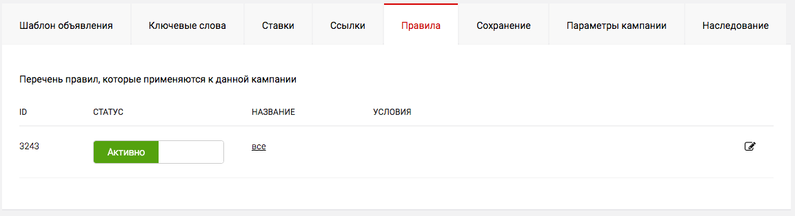
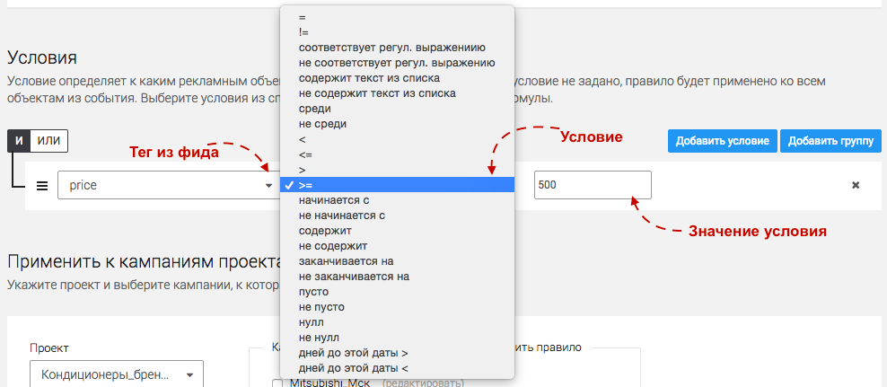
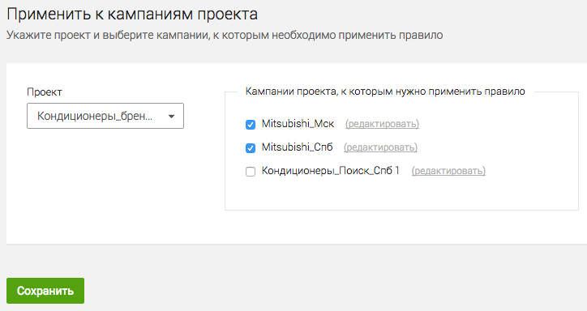

В данный момент сервисы К50:Генератор в процессе переезда на новый дизайн. Данная статья актуальна не для всех клиентов. Если вы не нашли ответ на свой вопрос, обратитесь к старой справке
Что такое правила
В первую очередь при создании кампании стоит настроить правила. Они определяют те товары/услуги/позиции из фида, которые попадут в данную кампанию.
Правила состоят из условий, которые и определяют логику распределения товаров по кампаниям.
Обратите внимание
Наличие хотя бы одного правила в кампании является необходимым условиям для генерации объявлений!
По умолчинаю каждая новая кампания имеет предустановленное правило "Все", которое не содержмит условий. Правило подразумевает, что все товары из фида попадут в данную кампанию. Если данное правило вас устраивает, то оставьте на данной вкладке все как есть.
Как создать правило и условия
-
Перейдите на вкладку "Правила", нажмите редактировать напротив предустановленного правила.
 -
Переименуйте правило. Правило выполняется, только если оно активно!
-
Задайте Условия выполнения Правила.
Правило работает, если выполняются все входящие в него условия
Условия могут соединяться операторами И/ИЛИ.

Условие состоит из трех полей: Тег - Условие - Значение
Необходимо выбрать тег из фида, по содержанию которого вы хотите добавить или исключить товар из кампании.
Выберите условие по которому будет работать данное свойство
В поле значение впишите конкретное значение.
В примере выше задано условие Price >= 500
4.Выберите кампании проекта, к которым будет применено данное Правило.

5.Нажмите "Сохранить"
Список всех условий
| Условие | Как работает | Пример |
|---|---|---|
| = | Свойство равно значению | Catid=13 |
| > | Свойство больше значения | Price>1000 |
| < | Свойство меньше значения | Price<50000 |
| >= | Свойство равно или больше значения | Price>=1000 |
| <= | Свойство меньше или равно значения | Price<=1000 |
| != | Свойство не равно значению | Catid!=13 |
| Число букв больше | Количество букв в свойстве больше, чем указано в значении | Model Число букв больше 2 |
| Число букв меньше | Количество букв в свойстве меньше, чем указано в значении | Model Число букв меньше 33 |
| Число слов больше | Количество слов в свойстве больше, чем указано в значении | Model Число слов больше 1 |
| Число слов меньше | Количество слов в свойстве меньше, чем указано в значении | Model Число слов меньше 4 |
| Содержит текст | Свойство содержит текст | typeprefix Содержит текст Принтер |
| Не содержит текст | Свойство не содержит текст | typeprefix Не содержит текст Фотоаппарат |
| Содержится среди (через запятую) | Свойство содержит несколько значений | Catid Содержится среди (через запятую) 13,14,15,16 |
| Не содержится среди (через запятую) | Свойство не содержит несколько значений | Catid Не содержится среди (через запятую) 20,21,22,23 |
Примеры правил
Задача:
Интернет-магазина бытовой техники содержит большое количество товарных позиций относящихся к различным категориям (холодильники, посудомоечные машины, чайники и т.д.). Наша задача - создать отдельную рекламную кампанию для категории холодильники дороже 15 000 руб.
Условие:
typeprefix - содержит - Холодильник
price - >= - 30000
Результат:
В кампанию с таким правилом попадут только товары дороже 15 000 руб., у которых typeprefix содержит слово Холодильник
Задача:
Сайт по продаже билетов на концерты в Москве и Санкт-Петербурге. В кампанию должны попасть только концерты, на которые еще остались билеты и которые проходят в Москве.
Условие:
остаток билетов - > - 0
город - содержит - Москва
Результат:
В кампанию с таким правилом попадут только концерты, на которые билеты еще есть в продаже и которые проходят в Москве.